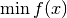
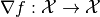

broydens_method¶
-
odl.solvers.smooth.newton.broydens_method(f, x, line_search=1.0, impl='first', maxiter=1000, tol=1e-15, hessinv_estimate=None, callback=None)[source]¶ Broyden’s first method, a quasi-Newton scheme.
Parameters: f :
FunctionalFunctional with
f.gradientx :
f.domainelementStarting point of the iteration
line_search : float or
LineSearch, optionalStrategy to choose the step length. If a float is given, uses it as a fixed step length.
impl : {‘first’, ‘second’}, optional
What version of Broydens method to use. First is also known as Broydens ‘good’ method, while the second is known as Broydens ‘bad’ method.
maxiter : int, optional
Maximum number of iterations.
tol.tol : float, optional
Tolerance that should be used for terminating the iteration.
hessinv_estimate :
Operator, optionalInitial estimate of the inverse of the Hessian operator. Needs to be an operator from
f.domaintof.domain. Default: Identity onf.domaincallback : callable, optional
Object executing code per iteration, e.g. plotting each iterate.
Notes
This is a general and optimized implementation of Broyden’s method, a quasi-Newton method for solving a general unconstrained optimization problem

for a differentiable function on a Hilbert space
 . It does so by finding a zero of the gradient
. It does so by finding a zero of the gradient
using a Newton-type update scheme with approximate Hessian.
The algorithm is described in [Bro1965] and [Kva1991], and in a Wikipedia article.